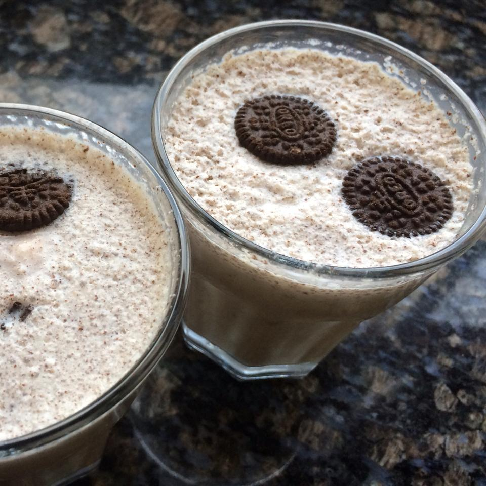

Oreo Milkshake

This recipe is super kid-friendly, easy to make, and delicious.
A favorite for kids' 'How To' speeches or just to enjoy on a hot day.
Oreo Shake needs to be served cool with cream or wihtout cream depending on taste.
Ingredients :-
- 4 Oreo cookies
- 1 cup vanilla ice cream
- 1 tablespoon sugar
- 1 cup milk
- 1 tablespoon chocolate sauce
Steps :-
-
Crush the cookies (You don't need to powder them, they should be crushed enough to be blended into a shake.)
-
Now, pour milk and chocolate syrup to a blender. Also, add Oreo cookies and ice-cream to the blender.
Blend well all the ingredients until combined completely.
-
Crush and crumble some Oreo cookies in a bowl. Top up with more crushed cookies
-
Pour the prepared milkshake into a glass. Finally,
top the milkshake with the crumbled Oreo cookies. Serve immediately with a straw.
| Prep Time |
Cook Time |
Total time |
Difficulty Level |
| 05 mins |
00 mins |
05 mins |
Very Easy |
Go to Top of Page | Home page | Credit for Recipe | Recipe Project by Yash.